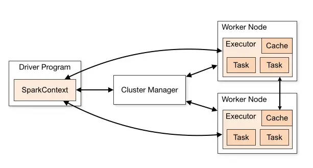

PySpark
Contents
4.2. PySpark#
The content of this section is a jupyter book implementation of this tutorial.
Spark Cluster 
4.2.1. Installation#
To install PySpark on your system, I recommend following this guide.
4.2.2. RDDs#
Resilient Distributed DAtasets (RDDs) can be seen as a sequence of elements. However, transformation on RDDs are evaluated lazily. The official RDDs documentation covers extensively their usage. Cheat Sheet: PySpark RDDs.
We initialize a SparkContext to interact with our local Spark Cluster.
from pyspark import SparkContext
sc = SparkContext.getOrCreate()
Setting default log level to "WARN".
To adjust logging level use sc.setLogLevel(newLevel). For SparkR, use setLogLevel(newLevel).
23/02/15 01:29:46 WARN NativeCodeLoader: Unable to load native-hadoop library for your platform... using builtin-java classes where applicable
We can parallelize file content or sequence of objects.
lines = sc.textFile("trees.csv")
lines
trees.csv MapPartitionsRDD[1] at textFile at NativeMethodAccessorImpl.java:0
rdd = sc.parallelize([i for i in range (10)])
rdd
ParallelCollectionRDD[2] at readRDDFromFile at PythonRDD.scala:274
4.2.2.1. Actions#
Spark actions evaluate the rdd and usually returns data. Some useful actions:
collect(): This function will collect the RDD into a python list.take(k): This function create an RDD from k element within the RDD.count(): This function returns the number of element within the RDD.
Refer to the pyspark documentation for a complete list of actions.
rdd.collect()
[0, 1, 2, 3, 4, 5, 6, 7, 8, 9]
lines.take(3)
[Stage 1:> (0 + 1) / 1]
['Tree,Park Name,x,y', '1,Canada Park,2,3', '2,Otter Park,63,21']
lines.count()
4
4.2.2.2. Tranformations#
Spark transformation lazily apply a function to a RDD. Refer to the pyspark documentation for a complete list of transformations.
map(func) : Return a new distributed dataset formed by passing each element of the source through a function func.
rdd.map(lambda x: x*x).collect()
[0, 1, 4, 9, 16, 25, 36, 49, 64, 81]
flatMap(func) : Similar to map, but each input item can be mapped to 0 or more output items (so func should return a Seq rather than a single item).
rdd.flatMap(lambda x: [x*x, x*x*x] if x % 2 == 1 else []).collect()
[1, 1, 9, 27, 25, 125, 49, 343, 81, 729]
filter(func) : Return a new dataset formed by selecting those elements of the source on which func returns true.
rdd.filter(lambda x: x % 3 == 1).collect()
[1, 4, 7]
reduceByKey(func) : When called on a dataset of (K, V) pairs, returns a dataset of (K, V) pairs where the values for each key are aggregated using the given reduce function func, which must be of type (V,V) => V.
data = [(i%3, i) for i in range(10)]
rdd = sc.parallelize(data)
rdd.reduceByKey(lambda x, y: x+y).collect()
[(0, 18), (2, 15), (1, 12)]
intersection(dataset) : Return a new RDD that contains the intersection of elements in the source dataset and the argument.
data1 = [i for i in range(10)]
data2 = [i for i in range(5, 15)]
rdd1 = sc.parallelize(data1)
rdd2 = sc.parallelize(data2)
rdd1.intersection(rdd2).collect()
[8, 5, 9, 6, 7]
union(func): Return a new dataset that contains the union of the elements in the source dataset and the argument.
data1 = [i for i in range(10)]
data2 = [i for i in range(5, 15)]
rdd1 = sc.parallelize(data1)
rdd2 = sc.parallelize(data2)
rdd1.union(rdd2).collect()
[0, 1, 2, 3, 4, 5, 6, 7, 8, 9, 5, 6, 7, 8, 9, 10, 11, 12, 13, 14]
distinct() : Return a new dataset that contains the distinct elements of the source dataset.
data = [i%3 for i in range(10)]
rdd = sc.parallelize(data)
rdd.distinct().collect()
[0, 2, 1]
zipWithIndex() : Assign an index to each element in the RDD.
data = [i for i in range(10)]
rdd = sc.parallelize(data)
rdd.zipWithIndex().collect()
[(0, 0),
(1, 1),
(2, 2),
(3, 3),
(4, 4),
(5, 5),
(6, 6),
(7, 7),
(8, 8),
(9, 9)]
groupByKey() : When called on a dataset of (K, V) pairs, returns a dataset of (K, Iterable) pairs.
data = [(i%3, i) for i in range(10)]
rdd = sc.parallelize(data)
rdd.groupByKey().collect()
[(0, <pyspark.resultiterable.ResultIterable at 0x7f7c489138e0>),
(2, <pyspark.resultiterable.ResultIterable at 0x7f7c489131f0>),
(1, <pyspark.resultiterable.ResultIterable at 0x7f7c48913d60>)]
4.2.3. Dataframes#
Spark dataframes are tabular data. Similar to tables in SQL or spreadsheets.
Tree |
Park Name |
x |
y |
|---|---|---|---|
1 |
Canada Park |
2 |
3 |
2 |
Otter Park |
63 |
21 |
3 |
Canada Park |
2 |
3 |
We instantiate a Spark session to interact with our local cluster.
from pyspark.sql import SparkSession
spark = SparkSession.builder.getOrCreate()
To load a csv file into a dataframe:
filename = "trees.csv"
df = spark.read.csv(filename, header=True, mode="DROPMALFORMED")
df = df .withColumn("x", df.x.cast("int")) \
.withColumn("y", df.y.cast("int"))
df
DataFrame[Tree: string, Park Name: string, x: int, y: int]
show() : Display the first rows of a dataframe.
df.show()
+----+-----------+---+---+
|Tree| Park Name| x| y|
+----+-----------+---+---+
| 1|Canada Park| 2| 3|
| 2| Otter Park| 63| 21|
| 3|Canada Park| 2| 25|
+----+-----------+---+---+
select(column name, another column name) : Return a dataframe with only the selected columns.
df.select("Park Name", "Tree").take(5)
[Row(Park Name='Canada Park', Tree='1'),
Row(Park Name='Otter Park', Tree='2'),
Row(Park Name='Canada Park', Tree='3')]
where("action") : Return a dataframe where only the condition applies.
df.where("x = 2").count()
2
groupBy(): Group rows together using aggregate function such as min, max or avg.
df.groupBy("x").count().collect()
[Row(x=63, count=1), Row(x=2, count=2)]
df.groupBy("x").sum().show()
+---+------+------+
| x|sum(x)|sum(y)|
+---+------+------+
| 63| 63| 21|
| 2| 4| 28|
+---+------+------+
df.groupBy("x").mean("y").show()
+---+------+
| x|avg(y)|
+---+------+
| 63| 21.0|
| 2| 14.0|
+---+------+
orderBy("column1", "column2", ...): Order the dataframe with one or more column.
from pyspark.sql.functions import desc
df.orderBy(desc("Park Name")).show()
+----+-----------+---+---+
|Tree| Park Name| x| y|
+----+-----------+---+---+
| 2| Otter Park| 63| 21|
| 1|Canada Park| 2| 3|
| 3|Canada Park| 2| 25|
+----+-----------+---+---+
limit(number): Drop all rows after the number th row.
df.limit(2).show()
+----+-----------+---+---+
|Tree| Park Name| x| y|
+----+-----------+---+---+
| 1|Canada Park| 2| 3|
| 2| Otter Park| 63| 21|
+----+-----------+---+---+
createDataFrame(rdd): Create a dataframe from an RDD.
from pyspark.sql import Row
lines = sc.textFile("trees.csv")
header = lines.first()
lines = lines.filter(lambda l: l != header) # Remove header
lines = lines.map(lambda x: x.split(","))
trees_rdd = lines.map(lambda p: Row(Tree=p[0], Park_Name=p[1], x=p[2], y=p[3]))
trees_df = spark.createDataFrame(trees_rdd)
trees_df.show()
+----+-----------+---+---+
|Tree| Park_Name| x| y|
+----+-----------+---+---+
| 1|Canada Park| 2| 3|
| 2| Otter Park| 63| 21|
| 3|Canada Park| 2| 25|
+----+-----------+---+---+
toDF(name1, name2, name3): Rename the columns of the data frame.
trees_df = trees_df.toDF("ID", "Park Name", "lat", "long")
trees_df.show()
+---+-----------+---+----+
| ID| Park Name|lat|long|
+---+-----------+---+----+
| 1|Canada Park| 2| 3|
| 2| Otter Park| 63| 21|
| 3|Canada Park| 2| 25|
+---+-----------+---+----+
join(): Combine dataframe based on common column.
df.join(trees_df, df["Tree"] == trees_df.ID).drop("ID").show()
+----+-----------+---+---+-----------+---+----+
|Tree| Park Name| x| y| Park Name|lat|long|
+----+-----------+---+---+-----------+---+----+
| 1|Canada Park| 2| 3|Canada Park| 2| 3|
| 2| Otter Park| 63| 21| Otter Park| 63| 21|
| 3|Canada Park| 2| 25|Canada Park| 2| 25|
+----+-----------+---+---+-----------+---+----+